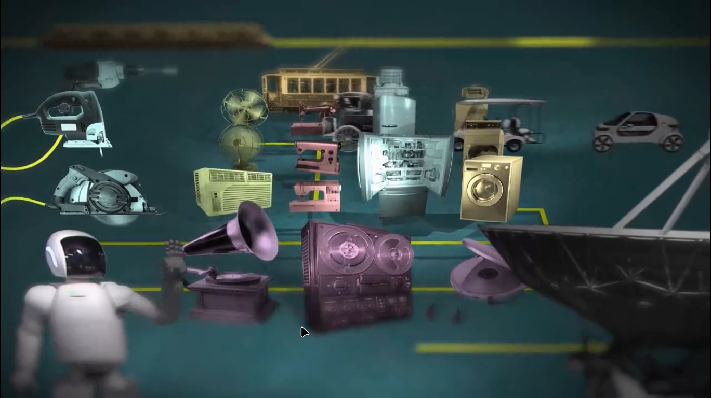
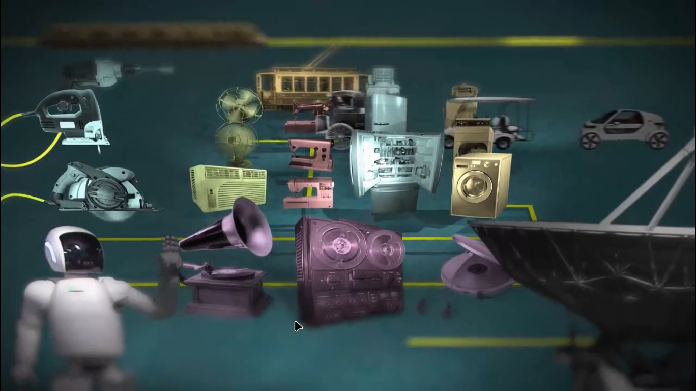
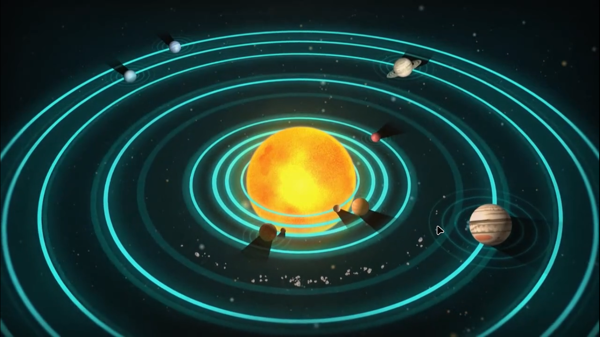

Earlier fast speed meaning , fast horses and fast ships .
Our messages without being visible travel at light speed .HOW DO WE GET THIS POWER , ITS AN EFFORT OF A SINGLE MEN (FARADY)
If FARADY did not existed , then world would not be having below
there is an army of slaves that wait for our signals , how we made electrons work for us .
This story starts with newton , he asked "how sun makes these planets revolve without touching them . how does apple know where to fall ."
Same problem also troubled einstein
Between einstein and newton another genius was born FARADY , because of farady's work einstein gone that far
Farady : he made invisible army of electron dance at human will .
This was the first motor of the world , that turned electricity to continous running mechanical motion .
THis invention changed everything
 

THINK ABOUT IT : TODAY : every business ,factory ,technology
Everything that is persent today
Is there because of FARADY's motor's experiment
Humphy davy assigned farady to crack the method of making of good lenses
After 4 years of intense hardwork , farady was not able to match fronhoffer's lens .
After humphy's death he came back
Motion is getting converted into current ..THIS IS THE FIRST GENERATOR OF THE WORLD
Faraday though around magent the space is filled with an invisible force lines .he named it field
Magnet is not just magnetised iron rod
Faraday believed all natural forces are one
FARADY FOUND THE RELATIONSHIP BETWEEN MAGNET AND ELECTRICITY : HE THOUGHT IS THERE A RELATIONSHIP BETWEEN THESE 2 AND LIGHT
For that he designed an expereiment
He know that light moves like a wave , these waves move forward in all directions
but there is a way to seperate wave : its called polarization
He wanted to know that magnetic field has any impact of light wave

A barrier to light wave , it can only pass if magnetic field is changing its path
He found that electromagnetic force can bend light
After he found that magnetic field can impact light , now he wanted to know how these three forces work together
He knew electric current can turn any wire into a magnet
current passing through electric wire must be forming an magnetic field
Earth is itself a magent
birld are the decendents of the kids of the dinasaurs
All birds are experts in finding there way , THERE IS A COMPUS IN BIRDS'S BODY ,thus they know about the magenetic field of the earth ,THERE BRAIN PROCESS MAGNETIC DATA JUST LIKE WE PROCESS VISUAL DATA .
WE ARE USING MAGNETIC FIELDS(through birds) FOR SO LONG AND WE ARE NOT AWARE OF IT
Why there is a magenetic field on earth and how it is made ,
when earth moves , its liquid iron near its core also moves ,that acts as a wire carrying current
as farady tought us electric field makes magnetic fields
This magnetic field also protect us from cosmic light , cosmic rays can pass through our dna
Michale farady solved a problem that isac newton was unable to solve
Without touching how sun makes other planet move in a particular way .
Sun touches planets through its gravitational fields
Earth gravitational field tells apple how to fall
Farady was not good at maths , and world believed in his capabilites but never believed in his invisible force lines ideas , they wanted to see a mathematical formulae .
James clarke maxwell who was good at maths ,gave him the formulaes
Through equations we can see , and prove that this pendulam will not hit my face
When maxwell converted farady's ideas into equations he found the similarity
In the below equation , to balance it maxwell added a term ,after adding this term the stationary waves starts travelling at speed of light
And very soon ,through these waves ,we found ways to transmitting messages .
SEEING
This changed the civilization , it turned hugely isolated world into a big village .
We got connected with the speed of light
FARADY : there is no magic that cannot be understood,provided it is following laws of nature